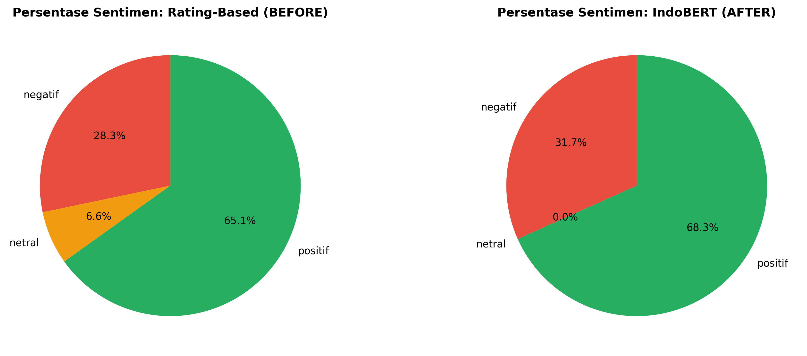

📸 Visualisasi
Perbandingan Distribusi

Confusion Matrix

Persentase Distribusi

Analisis Agreement

Perbandingan Rating-Based vs IndoBERT-Based Sentiment Analysis
| Metrik | BEFORE (Rating-Based) | AFTER (IndoBERT) |
|---|---|---|
| Positif | 32,225 (65.12%) | 33,795 (68.29%) |
| Negatif | 13,990 (28.27%) | 15,690 (31.71%) |
| Netral | 3,270 (6.61%) | 0 (0.00%) |
| Rating Asli | Prediksi Negatif | Prediksi Positif | Total |
|---|---|---|---|
| Negatif | 11,825 | 2,165 | 13,990 |
| Netral | 1,511 | 1,759 | 3,270 |
| Positif | 2,354 | 29,871 | 32,225 |
| Total | 15,690 | 33,795 | 49,485 |

Total ketidaksesuaian: 7,789 (15.74%)
| Kategori Ketidaksesuaian | Jumlah | Persentase |
|---|---|---|
| Positif → Negatif | 2,354 | 4.75% |
| Negatif → Positif | 2,165 | 4.37% |
| Netral → Positif | 1,759 | 3.55% |
| Netral → Negatif | 1,511 | 3.05% |